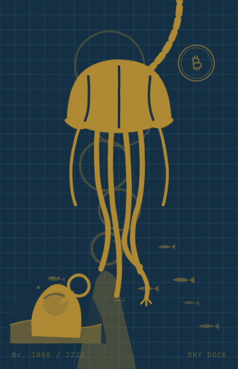
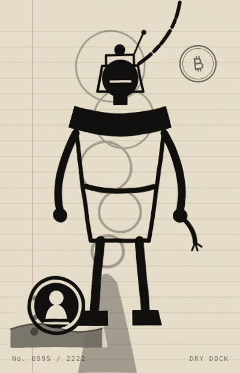
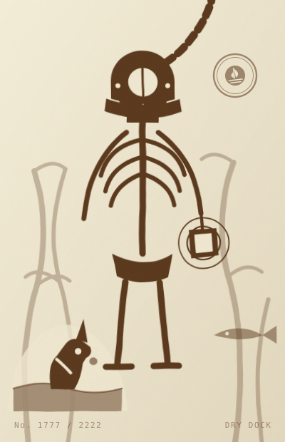
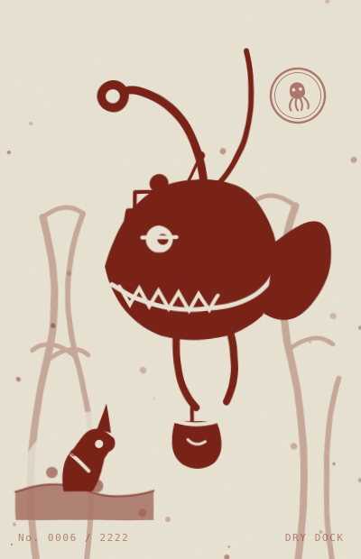
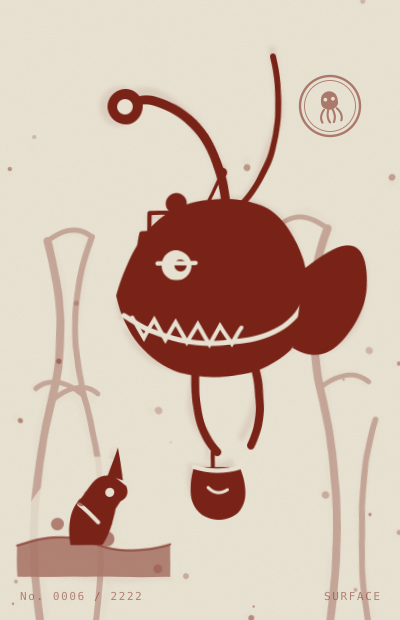
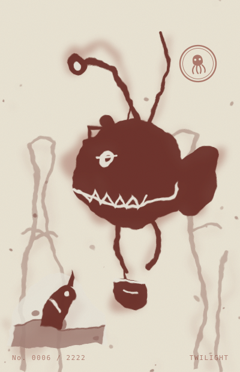
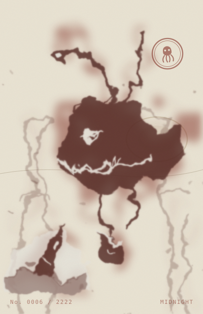
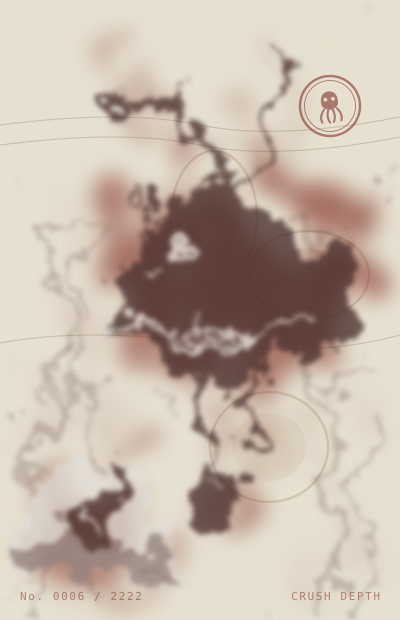
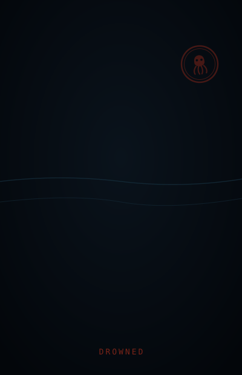
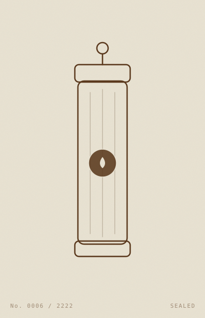

The trait table was sealed before minting opened. Nothing about the art can change now that demand is known.
Previews are numbered by table slot. Plate numbers map onto slots by an offset drawn after minting closes.



Attach a leveraged position and the ink starts reading it. Crisp in dry dock, dissolving into plumes as the health factor falls, gone when it liquidates. Nobody repaints it — the renderer reads the position on every view.






And mints themselves a trophy engraved with your loss. This is the mechanic, not a side effect.
Which plate is inside it is not decided yet. The offset mapping plate numbers onto table slots is drawn after minting closes, so no transaction position can be timed to land a rare one.
Every plate in the collection looks exactly like this until reveal. Deliberately — a placeholder that hints at rarity is a placeholder that leaks it.

Not promises. Each one is a function in UnderwaterPlates.sol that would have to revert for it to be untrue.
seal refuses to open minting unless the traits written to storage hash to the value below.
reveal picks the slot offset only once minting can no longer change who gets what.
The contract holds no approval, moves no collateral, and reads Aave read-only. It cannot liquidate anybody.
Counted out of the sealed table, so these are the true numbers and not the weights they were drawn from.
| Trait | Category | Out of 2222 |
|---|---|---|
| Satoshi | relic | 35 · 1.58% |
| Cut crystal | relic | 62 · 2.79% |
| Unicorn figurehead | relic | 65 · 2.93% |
| Gold leaf | pigment | 147 · 6.62% |
| Ink · Kraken | emblem | 195 · 8.78% |
Count them yourself — the table is public and it is sealed.
Fully on-chain. Each one a live rendering of a leveraged position.